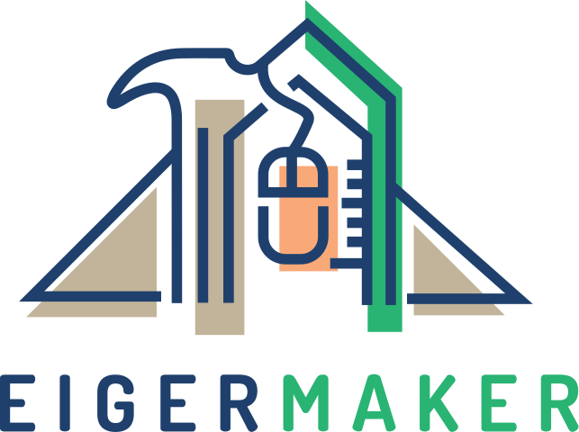

Radar & Kurzfristmodell ICON-CH1: Quelle: MeteoSchweiz — CC BY 4.0.
Modell ICON-D2: Quelle: Deutscher Wetterdienst (DWD) — GeoNutzV / CC BY 4.0.
Modell AROME: Quelle: Météo-France — Licence Ouverte (Etalab).
Kartendaten: Grenzen, Seen & Flüsse aus Natural Earth (Public Domain); Orte aus GeoNames (CC BY 4.0).
Die Datenquellen unterstützen diesen Dienst nicht und stehen in keiner Verbindung zu ihm.